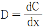
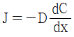
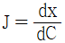
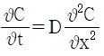
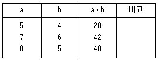

금속재료산업기사 (2015-05-31 기출문제)
1과목: 금속재료
1. 금속에 관한 일반적 설명으로 틀린 것은?
- 순금속은 합금에 비해 경도가 높다.
- 강자성체 금속으로는 Fe, Co, Ni 등이 있다.
- 전성 및 연성이 좋고, 금속 고유의 광택을 갖는다.
- 수은을 제외한 금속은 상온에서 고체상태의 결정구조를 갖는다.
(정답률: 89%)

2. 고융점 금속의 특성에 대한 설명으로 틀린 것은?
- 증기압이 높다.
- 융점이 높으므로 고온강도가 크다.
- W, Mo은 열팽창계수가 낮으나 열전도율과 탄성률이 높다.
- 내산화성은 적으나 습식부식에 대한 내식성은 특히 Ta, Nb에서 우수하다.
(정답률: 53%)
3. 항공기용, 우주 항공기 신소재 및 그 합금의 특성에 관한 설명으로 틀린 것은?
- TEC-3합금은 항공기용 날개 재료에 사용된다.
- 항공기 재료는 응력부식 균열이 발생하지 않아야 한다.
- 7175합금은 초초두랄루민(ESD)인 7075합금의 개량합금으로 항공기 재료로 사용된다.
- 항공기 재료로 비중이 3이하이고 용융온도 높은 Be을 첨가한 합금은 우주항공기 등에 사용된다.
(정답률: 65%)
4. 다음 Al합금에 대한 설명 중 틀린 것은?
- 실루민 합금은 Al에 Si를 첨가한 합금으로 조직을 미세화하기 위해 개량처리를 한다.
- 하이드로날륨은 Al에 약 10%까지 Mg를 첨가한 것으로 내식성 및 연신성이 우수한 합금이다.
- 라우탈은 Al-Cu-Si계 합금으로 Si에 의해 주조성을 개선하고 Cu에 의해 피삭성을 좋게한 합금이다.
- Y합금은 Al-Cu-Zn-Sn계 합금으로 800℃에서 용체화처리 후 상온시효하여 기계적 성질을 개선한 합금이다.
(정답률: 71%)
5. 전자기 재료에 사용되고 있는 Ni-Fe계 실용합금이 아닌 것은?
- 인바
- 엘린바
- 두랄루민
- 플래티나이트
(정답률: 82%)
6. 큰 진동 감쇠능을 가지므로 내진재, 방음재료 실용화되고 있는 형상기억 합금은?
- Cu계 합금
- Ti-Ni계 합금
- Cu-Zn-Si계 합금
- Cu-Zn-As계 합금
(정답률: 82%)
7. 18-8스테인리스강의 조직으로 옳은 것은?
- 페라이트(ferrite)
- 펄라이트(pearlite)
- 시멘타이트(cementite)
- 오스테나이트(arstenite)
(정답률: 85%)
8. 마그네슘합금이 구조재로서의 특성으로 틀린 것은?
- 비강도가 커서 휴대용기기의 재료에 사용한다.
- 상온변형이 쉬워 굽힘, 휨 등의 제품에 사용한다.
- 실용금속 중에서 가장 가벼우며 비중이 약 1.74이다.
- 감쇠능(減衰能)이 주철보다 커서 소음방지 구조재로서 우수하다.
(정답률: 64%)
9. 20금(20K)의 순금 함유율은 약 몇 %인가?
- 65%
- 75%
- 83%
- 93%
(정답률: 74%)
10. Fe-C 상태도에 대한 설명으로 옳은 것은?
- δ-ferrite는 면심입방격자 금속이다.
- Ao는 순철의 자기 변태점이며, 온도는 약 723℃이다.
- A1는 시멘타이트의 자기 변태점이며, 온도는 약 768℃이다.
- 순철의 A3 변태점의 온도가 약 910℃이며, α ⇔ γ가 되는 점이다.
(정답률: 75%)
11. 고강도합금으로 사용하는 두랄루민에 적용된 강화 메카니즘은?
- 가공강화
- 시효강화
- 고용강화
- 입계강화
(정답률: 76%)
12. 다이캐스팅용으로 쓰이는 아연합금의 원소에 대한 설명으로 틀린 것은?
- Al은 유동성을 개선한다.
- Cu는 입계부식을 억제한다.
- Li은 길이변화에 큰 영향을 준다.
- Mg을 일정향 이상 많게 하면 유동성이 개선되어 엷고 복잡한 형상주조에 우수하다.
(정답률: 67%)
13. 바이메탈(bimetal)과 비슷한 제조법으로 만드는 기능성 금속복합재료는?
- 클래드(clad)강판
- 표면처리강판
- 샌드위치강판
- 아연도금강판
(정답률: 73%)
14. 7:3 황동에 2% Fe와 소량의 Sn, Al을 넣어 주조재와 가공재로 사용되는 합금은?
- 양백(nickel silver)
- 문쯔메탈(muntz metal)
- 길딩메탈(gilding metal)
- 두라나메탈(durana metal)
(정답률: 70%)
15. 베어링용 합금으로 사용되는 재료가 아닌 것은?
- 켈멧(kelmet)
- 루기메탈(lurgi metal)
- 배빗메탈(babbit metal)
- 네이벌 브라스(naval brass)
(정답률: 72%)
16. 주철의 성장 원인으로 틀린 것은?
- 페라이트 조직 중의 Si의 산화
- 펄라이트 조직중의 Fe3C 분해에 따른 흑연화
- 흑연이 미세화 되어서 조직이 치밀하여 부피가 팽창
- A1 변태의 반복과정에서 오는 체적변화에 기인하는 미세한 균열의 발생
(정답률: 50%)
17. 탄소량에 대한 설명 중 틀린 것은?
- 과공석강은 탄소량이 약 0.8~2.0% 이하인 강을 말한다.
- 강 내에 탄소가 2.0% 이상인 합금을 주강이하고 한다.
- 아공석강은 탄소량이 약 0.025~0.8% 이하인 강은 말한다.
- 강 내에 탄소가 약 4.3%인 것을 공정 주철이라고 한다.
(정답률: 78%)
18. 저융점 합금에 관한 설명으로 틀린 것은?
- 이융합금, 가융합금이라고도 한다.
- 전기 퓨즈, 화재경보기 등에 사용된다.
- 약 700℃ 이하의 융점을 갖는 합금이다.
- Sn, Pb, Cd, Bi 등의 2원 또는 다원계의 공정 합금이다.
(정답률: 72%)
19. 열간 가공(성형)용 공구강으로 금형 재료에 사용되는 강종은?
- SPS9
- SKH51
- STD61
- SNCM435
(정답률: 80%)
20. Si의 증가에 따라 Fe-C계에 미치는 영향으로 옳은 것은?
- 공정온도가 하강한다.
- 공성온도가 하강한다.
- 공정점이 고탄소측으로 이동한다.
- 오스테나이트에 대한 탄소 용해도가 감소한다.
(정답률: 55%)
2과목: 금속조직
21. 확산에 대한 설명으로 틀린 것은?
- 확산속도가 큰 것일수록 활성화에너지가 크다.
- 입계는 입내에 비하여 결합이 많아 확산이 일어나기 쉽다.
- 온도가 낮을 때는 입계 확산과 입내 확산과의 차이가 크게 된다.
- 이원(二元) 이상의 합금에서 복합적인 상호 확산을 반응 확산이라 한다.
(정답률: 47%)
22. 새로운 상이 성장할 때의 계면 이동이 개개의 원자가 열적으로 활성화된 이동으로 일어나는 경우의 변태는?
- 무확산 변태
- 고속형 변태
- 확산형 변태
- 전단형 변태
(정답률: 81%)
23. 금속의 온도가 낮을 때 확산의 활성화 에너지 크기가 큰 순서에서 작은 순서로 나열된 것은?
- 입계확산＞표면확산＞격자확산
- 격자확산＞입계확산＞표면확산
- 입계확산＞격자확산＞표면확산
- 격자확산＞표면확산＞입계확산
(정답률: 67%)
24. 규칙-불규칙 변태의 일반적인 성질의 설명으로 틀린 것은?
- 규칙격자가 생기면 전도전자의 신란이 많아 전기전도도가 커진다.
- Ni3 Mn 합금의 경우 규칙상은 강자성이나, 불규칙상은 상자성을 갖는다.
- 큐리점에서 비얼의 증가는 단위 규칙도 때문이다.
- 규칙화가 진행되면 강도 및 경도가 증가한다.
(정답률: 49%)
25. 응고시 체적 팽창이 발생하는 금속은?
- Sn
- Sb
- Pb
- Zn
(정답률: 51%)
26. 탄소강의 오스테나이트(austenite)상의 결정 구조는?
- BCC
- BCT
- FCC
- HCP
(정답률: 70%)
27. 면심입방정에서 가장 조밀한 원자면은?
- (100)
- (110)
- (120)
- (111)
(정답률: 74%)
28. 용융금속을 냉각시킬 때 냉각속도와 열흐름의 방향 등의 조건을 적절히 선택하여 1개의 결정핵만 성장시켜 단결정(single crystal)을 생성하는 방법은?
- 밀러(Miller)법
- 브래그(Bragg)법
- 베가드(Vegard)법
- 브리즈만(Bridgeman)법
(정답률: 64%)
29. 가공 변형이 전혀 없는 상태 즉, 완전 풀림 상태에서 금속 결정 내의 전위수는?
- 101~102/cm2
- 103~104/cm2
- 106~108/cm2
- 1011~1012/cm2
(정답률: 75%)
30. 회복(reccovery)에 관한 설명으로 옳은 것은?
- 회복고정에 전기저항은 증가하고 경도는 감소한다.
- 회복의 과정에서 여러 성질의 변화는 반드시 동일한 경과를 보인다.
- 융점이 낮은 금속에서는 가공 후 실온에 방치하면 회복이 일어나지 않는다.
- 결정립의 모양이나 방향에는 변화를 일으키지 않고 물리, 기계적 성질만이 변화한다.
(정답률: 80%)
31. 0.8%C 강이 오스테나이트에서 펄라이트로의 조직변화 과정을 설명한 것 중 틀린 것은?
- 오스테나이트 입계에서 핵이 발생한다.
- 시멘타이트 주위에는 탄소 부족으로 페라이트가 형성된다.
- 시멘타이트와 페라이트가 교대로 생성, 성장하여 충상조직을 형성한다.
- 시멘타이트 양과 페라이트 양은 대력 1:1 비율로 형성된다.
(정답률: 72%)
32. 임계전단응력 τ=F/Aㆍcosøcosλ로 표시된다. 이 식에서 슈미드(Schmid) 인자에 해당되는 것은?
- A
- F
- F/A
- cosøcosλ
(정답률: 76%)
33. Fick의 제1법칙 식으로 옳은 것은? (단, D는 확산점수이다.)




(정답률: 83%)
34. Fe-C 평형 상태도에서 공정점의 자유도(F)는?
- 0
- 1
- 2
- 3
(정답률: 75%)
35. 원자배열이 불규칙격자상태인 고용체를 높은 온도에서 서서히 냉각시키면 어느 온도에서 규칙격자의 상태로 변화한다 이때의 온도는?
- 공석온도
- 변태온도
- 전이온도
- 재결정온도
(정답률: 72%)
36. Gibb's의 3성분계의 그림에서 P조성 합금 중의 A성분의 양은?(오류 신고가 접수된 문제입니다. 반드시 정답과 해설을 확인하시기 바랍니다.)
- A - F
- P - E
- P - F
- P - D
(정답률: 64%)
37. 탄소강에서 탄소량의 증가에 따라 증가하는 성질은?
- 비중
- 전기저항
- 팽창계수
- 열전도도
(정답률: 70%)
38. Fe-C 평형상태도에서 순철의 변태가 아닌 것은?
- A1 변태
- A2 변태
- A3 변태
- A4 변태
(정답률: 81%)
39. Fe-C 평형상태도에서 a고용체 + Fe3C의 기계적 혼합물은?
- 페라이트(ferrite)
- 마텐자이트(martensite)
- 펄라이트(pearlite)
- 오스테나이트(austenite)
(정답률: 63%)
40. 고용체 강화 합금에 대한 설명으로 틀린 것은?
- 고용체가 형성되면 용질원자 근처에 응력장이 형성된다.
- 용매와 용질원자 사이의 원자크기가 비슷할 때 강화효과가 크다.
- 일반적으로 용마원자의 격자에 용질원자가 고용되면 순금속보다 강한 합금이 된다.
- 용질원자에 의한 응력장은 가동 전위의 응력장과 상호 작용을 하여 전위의 이동을 방해함으로써 강화된다.
(정답률: 52%)
3과목: 금속열처리
41. 0℃ 이하의 온도, 즉 Sub-zero 온도에서 냉각시키는 심냉처리의 목적으로 옳은 것은?
- 경화된 강의 잔류오스테나이트를 펄라이트화한다.
- 경화된 강의 잔류펄라이트를 시멘타이트화한다.
- 경화된 강의 잔류시멘타이트를 펄라이트화한다.
- 경화된 강의 잔류오스테나이트를 마텐자이트화한다.
(정답률: 82%)
42. 탬퍼링 균열의 원인이 아닌 것은?
- 탬퍼링의 급속 가열
- 탈탄층이 있는 경우
- 탬퍼링 온도로부터 서냉
- 담금질이 끝나지 않은 상태의 것을 탬퍼링한 경우
(정답률: 81%)
43. 냉각제의 냉각효과를 지배하는 인자로 관련이 가장 적은 것은?
- 점성
- 비중
- 기화열
- 열전도도
(정답률: 65%)
44. 강의 열처리시 담금질형성을 향상시키는 원소로 가장 적합한 것은?
- S
- Pb
- Mn
- Zn
(정답률: 77%)
45. 공구강 및 합금강에서는 Cr과 공존하여 열처리성과 열처리 변형을 억제하는 합금 원소는?
- Al
- Mo
- S
- Cu
(정답률: 74%)
46. 철합금의 표면에 봉소를 확산시켜 붕소 화합물을 형성하는 침붕처리는 열충격 분위기에서 균열이 발생할 가능성이 높다. 이를 방지하기 위한 바람직한 화합물층은?(오류 신고가 접수된 문제입니다. 반드시 정답과 해설을 확인하시기 바랍니다.)
- FeB+Fe2B의 복합층
- FeB+Fe3B의 복합층
- Fe3B의 단일층
- FeB+Fe2B의 단일층
(정답률: 38%)
47. 경호능과 질량효과(Mass effect)에 관한 설명으로 틀린 것은?
- 임계냉각속도가 클수록 경화하기 쉽다.
- 정화의 깊이와 경도의 분포를 지배하는 성질을 경화능이라 한다.
- 강재의 크기에 따라 담금질효과가 달라지는 현상을 질량효과라 한다.
- 경화능이란 담금질경화하기 쉬운 정도 즉 마텐자이트 조직으로 얻기 쉬운 성질을 나타낸다.
(정답률: 48%)
48. 다음 열처리에서 가장 이상적인 담금질 방법으로 옳은 것은?
- Ar' 변태가 일어나는 구역은 급냉하고, Ar" 변태구역에서는 서냉한다.
- Ar' 변태가 일어나는 구역은 급냉하고, Ar" 변태구역에서는 급냉한다.
- Ar' 변태가 일어나는 구역은 서냉하고, Ar" 변태구역에서는 서냉한다.
- Ar' 변태가 일어나는 구역은 서냉하고, Ar" 변태구역에서는 급냉한다.
(정답률: 81%)
49. 인성을 증가시킬 목적으로 A1 변태점 이하에서 처리하는 열처리 방법은?
- 풀림
- 뜨임
- 담금질
- 노멀라이징
(정답률: 70%)
50. 가열로의 기초 필수 설비가 아닌 것은?
- 내화물
- 온도계
- 냉각장치
- 가열 장치
(정답률: 78%)
51. 냉각시의 A3 변태(Aγ3)를 설명한 것 중 옳은 것은?
- 723℃의 온도 범위에서 일어나는 변태이다.
- 910℃의 온도 범위에서 일어나는 변태이다.
- 순철에서는 δ상이 Y상으로 변태하는 온도이다.
- HCP에서 FCC로의 격자 변화가 일어나는 변태이다.
(정답률: 79%)
52. 가스침탄법에서 침탄품의 품질관리에 직접적으로 영향을 미치는 분위기(로기)관리는 가장 중요한 인자이다. 통상적으로 노 분위기를 관리하는 방법은?
- C분석
- CO분석
- CO2분석
- C3H8분석
(정답률: 59%)
53. Al 합금 주문의 질별 기호 중 ACIA-F에서 F가 의미하는 것은?
- 이널링한 것
- 가공경화한 것
- 용체화 처리한 것
- 제조한 그대로의 것
(정답률: 75%)
54. 일처리 균열 발생 감소를 위한 설계상의 방법 중 잘못된 것은?
- 내면의 우각에 R을 준다.
- 응력 집중부를 만들어 준다.
- 두꺼운 단면과 엷은 단면은 분리시킨다.
- 살이 엷은 부분에 구멍이 집중되지 않도록 한다.
(정답률: 79%)
55. 석출 경화형 구리 합금인 Cu-Be합금의 용체화 처리 방법으로 가장 적절한 것은?
- 가능한 한 최저온도 이하에서 처리한다.
- 가능한 한 최고온도를 초과하여 처리한다.
- 가능한 한 가장 늦은 속도로 담금질해야 한다.
- 가능한 한 용질 원자 Be이 충분히 용해 되도록 한다.
(정답률: 80%)
56. 흑체로부터의 복사선 가운데 가시 광선만을 이용하는 온도계로 700℃ 이상에서 사용되는 것은?
- 저항온도계
- 광고온도계
- 열전온도계
- 방사온도계
(정답률: 79%)
57. 베이나이트 변태에 대한 설명으로 옳은 것은?
- 베이나이트는 오스테나이트와 탄화물로 분해한다.
- 오스어닐링 처리를 하는 경우, 베이나이트가 생성된다.
- 저탄소강에서 상부와 하부 베이나이트는 탄소 농도에 따라서 변화한다.
- 0.7% 이상의 탄소강에서 상부와 베이나이트는 약 850℃를 경계로 구분이 된다.
(정답률: 63%)
58. 강의 마텐자이트변태에 대한 설명으로 옳은 것은?
- 마텐자이트 조직은 C가 고용된 고용체이다.
- 탄소강의 마텐자이트조직은 조밀육방격자이다.
- 냉각시 확산이 많이 일어날수록 마텐자이트 변태생성량이 많아진다.
- 마텐자이트 변태가 일어날 때 오래 유지 할수록 변태량이 많아지는 시간의 존 변태이다.
(정답률: 58%)
59. 강재를 담금질할 때 연속 냉각변태의 표시로 옳은 것은?
- CCT
- TAA
- ESA
- FRT
(정답률: 85%)
60. 분위기로에서 일반적으로 사용되는 중성 분위기 가스는?
- F
- O2
- Cl
- N2
(정답률: 72%)
4과목: 재료시험
61. 쇼어 경도 시험할 때의 유의사항으로 틀린 것은?
- 시험은 안정된 위치에서 실시한다.
- 다이아몬드선단의 마모여부를 점검한다.
- 시험편에 디름 등이 묻지 않도록 해야 한다.
- 고무와 같은 탄성률의 차이가 큰 재료를 선택하여 시험한다.
(정답률: 83%)
62. 정량 조직검사인 ASTM 결정입도 측정법에서 각 시야에서의 입도변호인 a와 각 입도변호에 따른 시야수 b가 다른 표와 같이 나타났을 때 ASTM 입도번호(Nm)는?

- 5.1
- 6.8
- 7.5
- 8.0
(정답률: 54%)
63. 밀폐된 용기의 누설검사로써 검사할 부분을 용액 중에 담근 후 공기, 질소 또는 헬륨가스 등을 통과시켜 누설부위에서 기포가 나타나게 하여 검사하는 방법은?
- 버블법
- 자기포화법
- 습식현상법
- 설퍼프린트법
(정답률: 82%)
64. 구리판, 알루미늄판 등 연성을 알기 위한 시험방법으로 커핑시험(cupping test)이라고도 불리는 시험방법은?
- 경도시험
- 압축시험
- 에릭슨시험
- 비틀림시험
(정답률: 81%)
65. 강재에 함유된 비금속 개재물 중 황화물계 개재물의 분류에 해당되는 것은?
- 그룹 A
- 그룹 B
- 그룹 C
- 그룹 D
(정답률: 80%)
66. 연강 시험편을 암슬러형 비틀림 시험에서 시험하는 경우 도오크(torque)의 비틀림 각도가 갑자기 증가하는 점은?
- 파단점
- 최대한중점
- 항복점
- 비례한계정
(정답률: 66%)
67. 미국 ASTM에서 추천한 봉재의 압축시편 규격이 아닌 것은? (단, h : 높이, d : 직경이다.)
- 단주시험편 : h=0.9d
- 판주시험편 : h=2d
- 중주시험편 h=3d
- 장주시험편 : h=10d
(정답률: 74%)
68. 와류탐상검사의 특징을 설명한 것 중 틀린 것은?
- 도체에 적용된다.
- 고온 부위의 시험체에 탐상이 가능하다.
- 시험체에 비접촉으로 탐상이 가능하다.
- 시험체의 내부에 있는 결함검출을 대상으로 한다.
(정답률: 71%)
69. 압축시험의 응력과 변형률 관계에서, m＜1 곡선에 해당되는 재료는?
- 강
- 고무
- 황동
- 콘크리트
(정답률: 73%)
70. 재료표면의 변형에 따라 저항력을 구치로 나타내는 값으로서 재료의 단단한 정도를 파악하고자 시험하는 것은?
- 경도
- 인성
- 충격값
- 마모율
(정답률: 83%)
71. 금속을 현미경 조직 검사하는 주목적으로 옳은 것은?
- 입계면의 강도 조사
- 금속 입자의 크기 조사
- 원소의 배열상태 조사
- 조성, 성분 및 중량 조사
(정답률: 56%)
72. KS B 0809에서 정한 충격 시험편의 나비는 10mm이다. 그러나 재료의 사정에 의해 표준치수의 시험편 채취가 불가능한 경우 나비의 축소사이즈에 해당되지 않는 것은?
- 1.5mm
- 2.5mm
- 5.0mm
- 7.5mm
(정답률: 52%)
73. 인장시험에 사용하는 용어와 이에 대한 설명으로 틀린 것은?
- 평행부 : 시험편의 중앙부에서 동일 단면을 갖는 부분
- 물림부 : 시험편의 끝부분으로서 시험기의 물림장치에 물려지는 부분
- 정형시험편 : 시험편의 평행부 단면적에 관계없이 각 부분의 모양, 치수가 일정하게 정해진 시험편
- 어깨부의 반지름 : 물림부의 응력을 균일하게 분산사키기 위하여 물림부와 평행부 사이에 만든 원호부분의 지름
(정답률: 72%)
74. 굽힘 시험에 대한 설명 중 옳은 것은?
- 시험편에 힘이 가하여지는 쪽의 응력은 인장력이 된다.
- 시험편의 양 끝 부분을 측정하여 크리프선도를 결정할 수 있다.
- 주철의 굽힙 시험에서 응력은 보통 과단계수로서 그 크기를 정한다.
- 재료의 압축에 대한 항압력 시험과 균열유무를 시험하는 궁곡 저항 시험으로 분류된다.
(정답률: 28%)
75. 일정한 온도에서 일정한 하중을 장시간 유지하면 변형이 증가되는 현상은?
- 소성 현상
- 탄성 현상
- 피로 현상
- 크리이프 현상
(정답률: 69%)
76. 방사선투과시험에서 투과 사진을 식별하기 위하여 사진에 글자나 기호를 새겨 넣는데 사용하는 것은?
- 계조계
- 필름마커
- 농도계
- 투과도계
(정답률: 79%)
77. 마모 시험의 결과에 영향을 미치는 요인이 아닌 것은?
- 윤활제 사용 유무
- 표면 다듬질 정도
- 상태 금속의 굵기
- 상태 금속의 성질
(정답률: 76%)
78. 그라인더 불꽃 검사법에서 특수강의 불꽃운 함유한 특수원소의 종류에 따라 변화하는데, 이들 특수원소 중 탄소 파열을 지지하는 원소는?
- Mn
- Cr
- Ni
- V
(정답률: 42%)
79. 안전점검의 추진 4단계 순서로 옳은 것은?
- 실태 파악→결함 발견→대책 결정→대책 실시
- 실태 파악→대책 결정→대책 실시→결함 발견
- 결함 발견→대책 실시→대책 결정→실태 파악
- 결함 발견→실태 파악→대책 결정→대책 실시
(정답률: 55%)
80. 파열 조직율 5% 피크랄로 에칭한 후 200~500배로 검경하였을 때 페라이트가 철의 벽개면에 석축하여 여러 가지 방향으로 층상을 이루고 있는 조직은?
- 시멘타이트 조직
- 마텐자이트 조직
- 오스테나이트 조직
- 비트만스테텐 조직
(정답률: 67%)